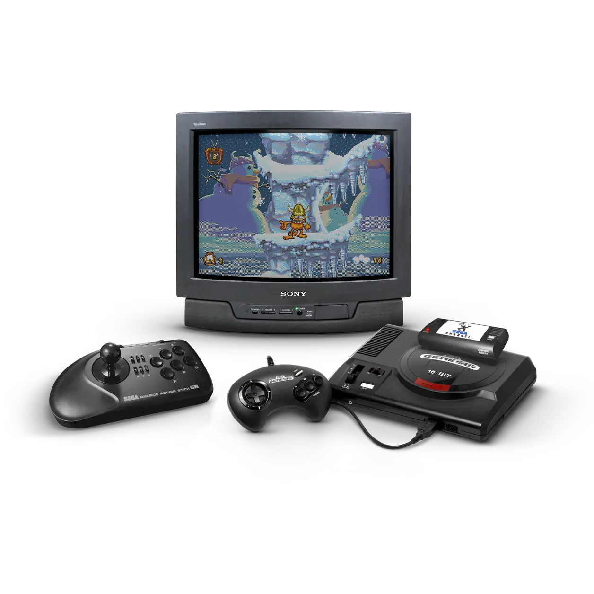

Коллекция оформлений Sega Channel (segachannel) с русским описанием, обложками, логотипами, видео, скриншотами и фан-артами.
- На выбор у вас два вида обложек: Кастомные (600х900) и Кастомные с боковой полосой (630x900).
- Видео (480p), скриншоты (480p).
- Подготовлен специальный вид темы «Карусель + Фан-арт». Поддерживаются экраны с соотношением сторон 4:3, 16:9, 16:10 и 21:9.
- Анимированные фан-арты и рамка под видео (сделал их из спрайтов меню Sega Channel).
- Две версии gamelist.xml, один с рандомными фан-артами, другой с фиксированными.
Источники:
Video Game History Foundation
Sega Channel Revival
Обновление от 04.07.2026
51 шт (~500 мб)
Sega Channel — это онлайн-сервис распространения игр, разработанный компанией Sega для игровой консоли Sega Genesis. Фактически Sega экспериментировала с концепцией цифрового игрового сервиса задолго до появления современных онлайн-магазинов и стриминговых платформ. Запущенный 12 декабря 1994 года, Sega Channel предоставлялся пользователям компаниями TCI и Time Warner Cable через сети кабельного телевидения по коаксиальному кабелю. Это был платный сервис, который позволял пользователям получать доступ к играм для Genesis, запускать демоверсии, заранее записанный игровой процесс и использовать чит-коды.
Сервис работал до 31 июля 1998 года — ещё три года после выхода консоли нового поколения Sega Saturn. Несмотря на критику из-за неудачно выбранного времени запуска и высокой стоимости подписки, Sega Channel получил признание за свои новаторские решения в области загружаемого контента и влияние на дальнейшее развитие сервисов для онлайн-игр.
Коллекция включает в себя десятки ранее не публиковавшихся вариантов игр и эксклюзивов Sega Channel. В эту подборку входят Garfield: Caught in the Act – The Lost Levels и The Flintstones, две игры, которые ранее считались безвозвратно утерянными и не подлежащими восстановлению.
Оригинальное видео - YouTube
Berenstain Bears Pico (U)
Breakthru (U)
FlintStones (W)
Garfield The Lost Levels (U)
Iron Hammer (U)
WaterWorld (U)
Battle Frenzy (U)
Body Count (U)
Power Drive (U)
Pulseman (JU)
QuackShot starring Donald Duck (U)
Al Unser Jr Road to the Top (U) [Proto]
Dan Marino's Power Play Football (U) [Proto]
Light Crusader (U) [April 1995 Proto]
Nick Faldo's Championship Golf (U) [Proto]
POPEYE (U) [Proto]
Shadows of the Wind (U) [Proto]
Wildsnake (U) [Proto]
Wrath of the Demon (U) [Proto]
YOGI BEAR (E) [Proto]
Sega Channel Revival - April 94 [27in1]
Sega Channel Revival - Dec 94 [41in1]
Sega Channel Revival - Feb 94 [41in1]
Sega Channel Revival - Jan 94 [40in1]
Sega Channel Revival - July 94 [26in1]
Sega Channel Revival - June 94 [25in1]
Sega Channel Revival - March 94 [28in1]
Sega Channel Revival - May 94 [27in1]
Sega Channel Revival - Nov 94 [41in1]
Sega Channel Revival v2 (Faster Load Speed) [41in1]
Первая версия